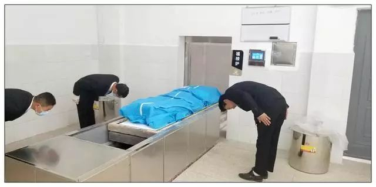

2019年6月1日1时36分，中安街道厦格社区鸭子塘居民小组居民彭关省去世，享年84岁；11时30分，
逝者遗体被接运到县殡仪馆；14时，完成了遗体火化；15时30分，骨灰被送入中安街道农村公益性公墓暂存待安放，
整个过程平静如常。这是中安街道在全县推行遗体火化措施后的第一例遗体火化，也是全县的第一例。中安街道为全县12个乡（镇）、
街道开了好头，逝者彭关省的家属也为全县83万人民落实殡葬改革政策开了好头。
接到人员去世信息报告后，街道党政主要领导迅速率队赶赴现场，连夜开展工作，宣传政策、疏导家属思想，直到逝者遗体顺利装入殡仪车。
2019年5月31日23时48分，火化节点前最后一位逝者在中安，2019年6月1日1时36分，火化节点后第一位逝者也在中安，这组数字读出的是街道、
社区干部前期工作的细密严实，从值班值守到逝者骨灰送入公墓，街道、社区干部全程参与，看到的是强有力的组织力、执行力。
从人员去世到骨灰入公墓，仅仅相隔14个小时，家属承诺不上祭、不大操大办、不搞封建迷信活动，真正体现了文明、节俭，移风易俗。据社区干部介绍，
一个月以来彭关省就靠氧气养着，昨天本人给子女作了安排，要求火化。彭外书（逝者之子）说“这是国家的政策，我们想得通。”遗体接运到殡仪馆后，
殡仪馆为家属主持了遗体告别，随即火化装盒。

对街道、社区干部的陪同参与，对殡仪馆的惠民服务，对县委政府的惠民殡葬政策，逝者家属表示满意。
彭外书说“这么多领导都来帮助我办理后事，很感谢，也感谢殡仪馆的特殊照顾。”从5月31日起，县殡仪馆也进入了搞好服务的临战状态，
安排了昼夜值班值守，下午17时前，向富村、老厂、十八连山、古敢、黄泥河5个乡镇每个乡镇专门派驻了一辆遗体接运车24小时待命。
6月1日上午9时前，又向墨红、营上、竹园派驻了遗体接运专车。考虑到彭关省是全县实施遗体火化的第一例，殡仪馆为其家属免费提供吊唁厅、
免费主持告别仪式、免费送骨灰入公墓。殡仪馆经营方负责人说“殡葬改革大力提倡丧事从简，诚心尊重每一位逝者是殡仪服务者必须坚守的理念，
我们的每一个员工都会像对待自己亲人一样对待每一位逝者，尽我们所能为丧属提供好服务。” （县民政局 来源：滇南胜境）